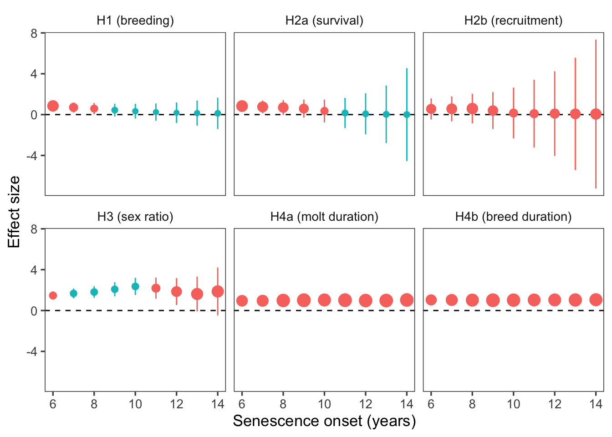

Reproduction frequency and offspring survival decline in elephant seals past prime age
Introduction
Our hypotheses:
Elephant seal reproductive success declines with age.
Reproductive declines persist to the next generation (maternal effect senescence). That is, offspring survival and reproduction decrease with maternal age.
Offspring sex ratios shift towards males with old age.
Phenology (breeding haulout and molt haulout) is shifted later for older animals and breeders.
Results
n = 1203 distinct animals, with 4404 total observations.
Raw data
Figure 1: A: Raw longitudinal data for 1,202 known-age female elephant seals and their observations from birth, to recruitment, to death. B: Histogram of the number of seals in each age class in the dataset.
H1: Reproductive senescence
We predicted that breeding success would decline with age. Based on the literature, we chose age 11 to be the end of prime age and indicate the onset of senescence. If breeding success declined with age, we would expect to see a negative slope post-senescence (Figure 2).
Figure 2: Breeding rates increased until age 10, then decreased from age 11 on. Black points represent mean and standard error of the observed breeding rates. The solid lines and shaded areas represent the mean and 95% confidence interval of the population-level model predictions. The observed data are unequally distributed across years, so the dotted lines indicate the predicted breeding rates averaged over years (i.e., including the random effect of year), weighted by the number of seals observed in each year.
# A tibble: 2 × 7
age age10 age_cat predicted se pred_lwr pred_upr
<dbl> <dbl> <chr> <dbl> <dbl> <dbl> <dbl>
1 11 0 Old 0.964 0.196 0.948 0.975
2 19 0.8 Old 0.897 0.331 0.819 0.943
# A tibble: 4 × 6
age age10 age_cat year_fct `(Intercept)` predicted
<dbl> <dbl> <chr> <chr> <dbl> <dbl>
1 11 0 Old 2018 -1.22 0.887
2 11 0 Old 2001 1.00 0.986
3 19 0.8 Old 2018 -1.22 0.719
4 19 0.8 Old 2001 1.00 0.959
Sample size n = 4404 observations of 1203 individuals.
H2: Maternal effect senescence
We predicted that reproductive declines would carry over to the next generation - that is, pups born to older mothers would have decreased survival (for female and male pups) and reproductive success (for female pups). Pup survival significantly decreased with maternal age, but pup reproduction did not (Figure 3).
Sample size for offspring survival was n = 1335 observations of 618 individuals. Sample size for offspring recruitment was n = 16 observations of 0 female individuals.
# A tibble: 2 × 7
age age10 age_cat predicted se pred_lwr pred_upr
<dbl> <dbl> <chr> <dbl> <dbl> <dbl> <dbl>
1 11 0 Old 0.303 0.176 0.236 0.380
2 19 0.8 Old 0.0926 0.556 0.0332 0.233
# A tibble: 4 × 6
age age10 age_cat year_fct `(Intercept)` predicted
<dbl> <dbl> <chr> <chr> <dbl> <dbl>
1 11 0 Old 1994 -0.616 0.190
2 11 0 Old 2016 0.817 0.496
3 19 0.8 Old 1994 -0.616 0.0523
4 19 0.8 Old 2016 0.817 0.188
H3: Changes in pup sex ratio with increased maternal age
We found that as maternal age increases, pup sex skews slightly towards males, but it is not significant (Figure 4).
Figure 4: Offspring sex ratio skews towards males with increasing maternal age, but the result is not significant (p = 0.6). Black points show the mean and solid black lines show the standard error of the observed sex ratio.
Sample size n = 1777 observations of 796 individuals.
Note: In the above figure, the population-level and weighted-average would lie directly on top of each other, so we’ve excluded the weighted average. This is because the random effect of year has very little impact on offspring sex ratio, which makes sense biologically. It’s easy to imagine scenarios where reproduction would vary year-to-year, but harder to think of a mechanism linking year and offspring sex ratio.
Phenology
Does the timing of breeding and molting suggest a mechanistic explanation for observed patterns in reproductive and maternal-effect senescence?
We fit a generalized linear mixed-effects model with the duration of a phase (molting or breeding) as the response variable and age, interacting with phase, as the predictor, using year as a random effect. We attempted to fit a model with random effects for both year and individual, but that failed to converge. We assumed the effect of year on phase duration (molting or breeding) was greater than the effect of individual, so we retained year as the random effect.
Where: \(d\) is the duration of the phase in days, \(NB\) is the negative binomial distribution with location \(\mu\) and dispersion \(k\), \(\eta\) is the linear predictor, \(\beta_0\) is the intercept, \(\beta_p\) is the coefficient for age (\(a\)) by phase (i.e., for \(p\) in “molting” or “breeding”), \(y\) is the year, and \(Z\) is the design matrix relating \(y\) to \(\eta\).
Generalized linear mixed model fit by maximum likelihood (Laplace
Approximation) [glmerMod]
Family: Negative Binomial(2.774) ( log )
Formula: dur_days ~ age10:phase + (1 | year)
Data: .
AIC BIC logLik deviance df.resid
22375.9 22405.3 -11182.9 22365.9 2687
Scaled residuals:
Min 1Q Median 3Q Max
-1.5917 -0.3655 0.0652 0.4113 5.4713
Random effects:
Groups Name Variance Std.Dev.
year (Intercept) 0.003961 0.06294
Number of obs: 2692, groups: year, 13
Fixed effects:
Estimate Std. Error z value Pr(>|z|)
(Intercept) 3.301115 0.034872 94.665 <2e-16 ***
age10:phasebreeddur -0.005969 0.039500 -0.151 0.88
age10:phasemoltdur -0.039128 0.040176 -0.974 0.33
---
Signif. codes: 0 '***' 0.001 '**' 0.01 '*' 0.05 '.' 0.1 ' ' 1
Correlation of Fixed Effects:
(Intr) ag10:phsb
ag10:phsbrd -0.732
ag10:phsmlt -0.731 0.722
Figure 5: Molting gets shorter but breeding doesn’t. A: Observed annual time allocation averaged over individuals. B: Raw data for breeding and molting durations (mean ± se) and predictions (mean and 95% CI) from negative binomial weighted by number of seals obersved per year.
Sample size n = 1346 observations of 429 individuals.
Supplemental Material
Detailed model outputs
H1: Reproductive senescence
Generalized linear mixed model fit by maximum likelihood (Laplace
Approximation) [glmerMod]
Family: binomial ( logit )
Formula: observed_int ~ age10:age_cat + (1 | animalID) + (1 | year_fct)
Data: sealdat
Control: glmerControl(optimizer = "bobyqa")
AIC BIC logLik deviance df.resid
2565.7 2597.7 -1277.9 2555.7 4399
Scaled residuals:
Min 1Q Median 3Q Max
-5.9645 0.1771 0.2558 0.3516 0.7488
Random effects:
Groups Name Variance Std.Dev.
animalID (Intercept) 0.4471 0.6687
year_fct (Intercept) 0.6126 0.7827
Number of obs: 4404, groups: animalID, 1203; year_fct, 36
Fixed effects:
Estimate Std. Error z value Pr(>|z|)
(Intercept) 3.2783 0.2015 16.266 < 2e-16 ***
age10:age_catYoung 1.0322 0.2615 3.947 7.91e-05 ***
age10:age_catOld -1.3985 0.4319 -3.238 0.0012 **
---
Signif. codes: 0 '***' 0.001 '**' 0.01 '*' 0.05 '.' 0.1 ' ' 1
Correlation of Fixed Effects:
(Intr) a10:_Y
ag10:g_ctYn 0.604
ag10:g_ctOl -0.373 -0.498
H2: Maternal effect senescence
Generalized linear mixed model fit by maximum likelihood (Laplace
Approximation) [glmerMod]
Family: binomial ( logit )
Formula: pup_surv_int ~ age10:age_cat + (1 | animalID) + (1 | year_fct)
Data: surv_recr_data
Control: glmerControl(optimizer = "bobyqa")
AIC BIC logLik deviance df.resid
1541.3 1567.3 -765.6 1531.3 1330
Scaled residuals:
Min 1Q Median 3Q Max
-0.9900 -0.6116 -0.5005 1.1413 2.6166
Random effects:
Groups Name Variance Std.Dev.
animalID (Intercept) 0.0352 0.1876
year_fct (Intercept) 0.2827 0.5317
Number of obs: 1335, groups: animalID, 618; year_fct, 29
Fixed effects:
Estimate Std. Error z value Pr(>|z|)
(Intercept) -0.8330 0.1786 -4.664 3.1e-06 ***
age10:age_catYoung 0.5222 0.3031 1.723 0.0849 .
age10:age_catOld -1.8111 0.7595 -2.385 0.0171 *
---
Signif. codes: 0 '***' 0.001 '**' 0.01 '*' 0.05 '.' 0.1 ' ' 1
Correlation of Fixed Effects:
(Intr) a10:_Y
ag10:g_ctYn 0.693
ag10:g_ctOl -0.403 -0.461
Generalized linear mixed model fit by maximum likelihood (Laplace
Approximation) [glmerMod]
Family: binomial ( logit )
Formula: pup_recr_int ~ age10:age_cat + (1 | year_fct)
Data: filter(surv_recr_data, pupsex == "F")
Control: glmerControl(optimizer = "bobyqa")
AIC BIC logLik deviance df.resid
574.0 591.8 -283.0 566.0 632
Scaled residuals:
Min 1Q Median 3Q Max
-0.5851 -0.4778 -0.3937 -0.3399 3.8709
Random effects:
Groups Name Variance Std.Dev.
year_fct (Intercept) 0.2695 0.5191
Number of obs: 636, groups: year_fct, 29
Fixed effects:
Estimate Std. Error z value Pr(>|z|)
(Intercept) -1.703041 0.277661 -6.134 8.6e-10 ***
age10:age_catYoung -0.005418 0.512590 -0.011 0.992
age10:age_catOld -2.384120 1.695726 -1.406 0.160
---
Signif. codes: 0 '***' 0.001 '**' 0.01 '*' 0.05 '.' 0.1 ' ' 1
Correlation of Fixed Effects:
(Intr) a10:_Y
ag10:g_ctYn 0.793
ag10:g_ctOl -0.401 -0.384
H3: Offspring sex ratio
Generalized linear mixed model fit by maximum likelihood (Laplace
Approximation) [glmerMod]
Family: binomial ( logit )
Formula: is_male ~ age10:age_cat + (1 | animalID) + (1 | year_fct)
Data: pup_sex_data
AIC BIC logLik deviance df.resid
2463.1 2490.5 -1226.5 2453.1 1772
Scaled residuals:
Min 1Q Median 3Q Max
-1.4490 -1.0231 0.8167 0.9547 1.0736
Random effects:
Groups Name Variance Std.Dev.
animalID (Intercept) 0.02204 0.1485
year_fct (Intercept) 0.02475 0.1573
Number of obs: 1777, groups: animalID, 796; year_fct, 36
Fixed effects:
Estimate Std. Error z value Pr(>|z|)
(Intercept) 0.1297 0.1131 1.147 0.251
age10:age_catYoung 0.1558 0.2302 0.677 0.499
age10:age_catOld 0.7828 0.5299 1.477 0.140
Correlation of Fixed Effects:
(Intr) a10:_Y
ag10:g_ctYn 0.859
ag10:g_ctOl -0.510 -0.467
Models’ sensitivity to age of senescence
age_cutoff
H1 (breeding)
H2a (survival)
H2b (recruitment)
H3 (sex ratio)
8
0.1062985
0.3617117
0.6345090
0.0669467
9
0.0039155
0.1926554
0.1386555
0.0358102
10
0.0025105
0.0207648
0.0588221
0.0641891
11
0.0012043
0.0152245
0.1597364
0.1395860
12
0.0012043
0.0152245
0.1597364
0.1395860
13
0.0011623
0.0147789
0.2300386
0.2274869

Figure 6: Model sensitivity to onset of senescence. Age at onset of senescence on the x-axis, p-value for the coefficient of the interaction (age category = post-senescence) x (response variable) on the y-axis. Statistical significance (p = 0.05) indicated by dashed line. Hypotheses H1 (reproductive senescence), H2b (maternal-effect senescence; offspring recruitment), and H3 (offspring sex ratio) were insensitive to choice of age for onset of senescence. Hypothesis H2a (maternal-effect senescence; offspring survival) was significantly supported for onset of senescence age 11+. At age 10, the p-vale for the coefficient of the interaction (age category = post-senescence) x (offspring survival) was 0.058.
Selective appearance and disappearance
Age-dependent life history shifts can result from within- or between-animal changes (Pol and Verhulst 2006). We hypothesized age-dependent changes in reproduction were due to senescence, i.e. within-animal changes. However, it is possible that selective appearance or disappearance of animals in the population can create the same pattern. For example, if animals the breed more frequently have lower survival, then older animals will reproduce less frequently not because of senescence but rather because infrequent breeders disproportionately survive to older ages (i.e. selective disappearance). We tested whether our significant results (reproductive senescence, maternal effect senescence in pup survival) were influenced by selective appearance and disappearance, following the methods of Pol and Verhulst (2006), by adding terms for age at first and last reproduction, respectively. If our results are due to selective appearance/disappearance instead of senescence, then the 95% CI for the coefficient of age in the old age class in these models will overlap 0.
Figure 7: The coefficient for age in the old age class in models accounting for selective appearance and disappearance. Red and blue indicate reproductive senescence (H1) and maternal effect senescence (H2a), respectively. Compared to the base model, the appearance model includes a term for age at first reproduction, the disappearance model includes a term for age at last reproduction, and the combined model includes both.
There was no evidence for selective appearance or disappearance influencing the relationship between maternal age and probability of reproduction or offspring survival. The 95% CI of the coefficient for age in the old age class did not overlap 0 for either hypothesis in any of the selective (dis)appearance models Figure 7. Therefore the observed patterns are consistent with the senescence hypothesis (i.e., within-animal change with age).
Chronological versus biological age
The chronological age of an individual may not reflect their biological age because aging rates vary within populations (Martin and Festa-Bianchet 2011). Years-to-death, a proxy for biological age, may therefore be a better predictor for senescence patterns than chronological age. We repeated our analysis for the reproductive senescence hypothesis using biological age, setting the breakpoint for senescence at biological age -7 years (i.e. 7 years prior to final observation), based on visual inspection of the raw data. This required us to limit our sample to animals with known longevity (i.e., last observation in 2020 or earlier), which reduced our sample size to 3126 observations of 900 distinct animals. Subsequently, we fit the model for breakpoints at all biological ages -12 to -3 years, to assess whether our results were sensitive to the choice of breakpoint. Finally, we re-fit the chronological reproductive senescence model using the known-longevity dataset and compared chronological versus biological age models using AIC.
Figure 8: Breeding probability over biological age. Points and error bars are the mean ± SE of observed breeding proportions within age classes. The vertical dashed line indicates the threshold for senescence. Solid lines and ribbons are the mean and 95% CI of the population-level breeding probability, estimated by a GLMM with random effects for individual and year. The dashed lines represent the mean of yearly breeding probabilities, weighted by the number of seals observed each year, which should match the observed data more closely than the population-level probabilities.
The biological age model did not support the reproductive senescence hypothesis. The coefficient for biological age among older animals (biological age > -7 years) was 0.375 (-0.305 - 1.055) (95% CI) which was not significantly different than 0 (p = 0.140). Choice of breakpoint for senescence did not affect the significance of this coefficient. For breakpoints -12 to -3 years, p reached a minimum at biological age -7 years (see table above).
The chronological age model outperformed the biological age model according to AIC. The difference in AIC between the two models was 3.9 and the chronological age model had an AIC weight of 0.873.
Based on these results, we find there is evidence to support the reproductive senescence hypothesis based on chronological age. The biological age proxy, years-to-death, should be a better predictor of senescence than chronological age if most mortality is age-related. However, adult elephant seal mortality is largely influenced by extrinsic factors, primarily food availability (Colegrove, Greig, and Gulland 2005; Holser et al. 2021). Poor foraging conditions during El Niño years, for example, may increase mortality rates among animals whose biological age is not yet advanced. As result, the years-to-death proxy for biological age likely conflates many biologically young and old animals that died due to extrinsic factors. More accurate measures of biological age, such as telomere length (Jylhävä, Pedersen, and Hägg 2017), may be necessary to investigate senescence in elephant seals and other species with high extrinsic sources of mortality from a non-chronological perspective.
Note
Max’s commentary: almost all seals bred in the last year they were observed. As a result, 96.6% (95% CI: 95.2% - 97.7%) of seals in the bioage 0 group bred. That proportion was greater than all bioages except -17 and -16, which had much smaller sample sizes (0: 903, -17: 1, -16: 4). With such a high probability in bioage 0, it’s just about impossible to get a negative slope in the old age category, because that one data point is pulling the right side of the line up. FWIW, 53.7% of the bioage 0 animals have a chronological age 4-7, so that part of the “old” biological age category is mostly chronologically young animals.
Breeding state and detection probability
Not all seals were detected in all years. A non-detection year during the seal’s lifespan (i.e. an unobserved year between the first and last observed years) could represent an unobserved animal at Año Nuevo or temporary emigration. In either case, the animal may or may not have reproduced that year. By excluding these unobserved animals, our inferences for H1 (reproductive senescence) may be biased if detectability varies with age and/or by breeding state. Here, we assess those potential biases.
Generalized linear mixed model fit by maximum likelihood (Laplace
Approximation) [glmerMod]
Family: binomial ( logit )
Formula: unobserved ~ age10 + (1 | year_fct) + (1 | animalID)
Data: missing_seals
AIC BIC logLik deviance df.resid
3033.9 3058.1 -1513.0 3025.9 3087
Scaled residuals:
Min 1Q Median 3Q Max
-3.6829 -0.4964 -0.3408 0.3243 4.6290
Random effects:
Groups Name Variance Std.Dev.
animalID (Intercept) 0.8602 0.9275
year_fct (Intercept) 0.9513 0.9754
Number of obs: 3091, groups: animalID, 651; year_fct, 34
Fixed effects:
Estimate Std. Error z value Pr(>|z|)
(Intercept) -1.1525 0.1864 -6.182 6.32e-10 ***
age10 1.0959 0.1722 6.364 1.97e-10 ***
---
Signif. codes: 0 '***' 0.001 '**' 0.01 '*' 0.05 '.' 0.1 ' ' 1
Correlation of Fixed Effects:
(Intr)
age10 0.210
First, we tested whether probability of detection was related to age. We found the proportion of unobserved animals increased with age. For this analysis, we excluded the first and last year of observation for each animal, because animals were necessarily observed in those years. For all years between, we determined whether animals were observed. Then we estimated the effect of age on probability of an animal being unobserved using a GLMM (binomial response, logit link) with random effects for year and animal (Figure 9). The coefficient for age was r missing_age_coef (p<0.0001).
Figure 9: The probability of an animal being unobserved increased with age. Points and error bars represent the proportion of unobserved animals within age classes plus/minus one standard error. The blue line and shaded area are the mean and 95% CI probability of an animal being unobserved estimated with a generalized linear mixed effect model. See text for model details.
The pattern of unobserved animals increasing with age means it is highly unlikely our inferences about reproductive senescence are due to partial detection. If there was no reproductive senescence in the population, then the apparent senescence we observed would have to result from older breeders being less detectable. However, the biology of northern elephant seals makes breeding a more detectable behavior than non-breeding. Animals must come to land for an extended period to give birth and wean their pups. Among the animals in this study, breeders hauled out for longer than non-breeders (1st - 3rd quartile: breeders 25 - 31 days; non-breeders 10 - 26 days). This extended period of time on the beach makes them more accessible to observers. Furthermore, northern elephant seals exhibit a high degree of site fidelity. Once they recruit to a breeding colony, temporary emigration is rare (cite me). The only plausible explanation for unobserved animals being disproportionately breeders would be crowding at the breeding colonies, which could obscure identifying marks. However, breeding animals were resighted 18.9 (7 - 28) times per year, compared to 8.6 (3 - 12) for non-breeders (mean, 1st - 3rd quartile), which suggests that breeders are more readily observable than non-breeders. Therefore, it is biologically implausible that the unobserved seals were disproportionately breeders and our estimates for reproductive senescence are, if anything, conservative.
Breakpoint vs quadratic
H1: Reproductive senescence
Estimate Std. Error z value Pr(>|z|)
(Intercept) 3.0829669 0.1803523 17.094141 1.640961e-65
poly(age10, 2, raw = TRUE)1 -0.1134344 0.1829231 -0.620121 5.351781e-01
poly(age10, 2, raw = TRUE)2 -1.3154889 0.3381634 -3.890098 1.002036e-04
[1] "Age peak (H1) = 10.6"
H2: Maternal effect senescence
Estimate Std. Error z value Pr(>|z|)
(Intercept) -1.0176772 0.1530649 -6.648666 2.957613e-11
poly(age10, 2, raw = TRUE)1 -0.4693668 0.3134354 -1.497491 1.342655e-01
poly(age10, 2, raw = TRUE)2 -1.0817482 0.5584824 -1.936942 5.275240e-02
[1] "Age peak (H2a) = 8.8"
Estimate Std. Error z value Pr(>|z|)
(Intercept) -1.8873468 0.2308794 -8.1745989 2.968517e-16
poly(age10, 2, raw = TRUE)1 -0.8114974 0.6472607 -1.2537413 2.099361e-01
poly(age10, 2, raw = TRUE)2 -0.7712672 1.0382858 -0.7428274 4.575862e-01
[1] "Age peak (H2b) = 5.7"
References
Colegrove, Kathleen M., Denise J. Greig, and Frances M. D. Gulland. 2005. “Causes of Live Strandings of Northern Elephant Seals (<I>Mirounga Angustirostris</I>) and Pacific Harbor Seals (<I>Phoca Vitulina</I>) Along the Central California Coast, 1992-2001.”Aquatic Mammals 31 (1): 1–10. https://doi.org/10.1578/am.31.1.2005.1.
Holser, Rachel R., Daniel E. Crocker, Patrick W. Robinson, Richard Condit, and Daniel P. Costa. 2021. “Density-Dependent Effects on Reproductive Output in a Capital Breeding Carnivore, the Northern Elephant Seal (Mirounga Angustirostris).”Proceedings of the Royal Society B: Biological Sciences 288 (1960). https://doi.org/10.1098/rspb.2021.1258.
Martin, Julien G. A., and Marco Festa-Bianchet. 2011. “Age-Independent and Age-Dependent Decreases in Reproduction of Females.”Ecology Letters 14 (6): 576–81. https://doi.org/10.1111/j.1461-0248.2011.01621.x.
Pol, M. van de, and S. Verhulst. 2006. “Age-Dependent Traits: A New Statistical Model to Separate Within- and Between-Individual Effects.”The American Naturalist 167 (5): 766–73. https://doi.org/10.1086/503331.
Source Code
---title: "Reproduction frequency and offspring survival decline in elephant seals past prime age"format: html: echo: false fig-width: 7 fig-height: 5 code-fold: true code-tools: true warning: false toc: trueeditor: visualbibliography: references.bib---```{r}#| label: setup#| include: false library(ggthemes)library(cowplot)library(lme4)library(lmerTest) # Loading this library will automatically append p-values to lmer models estimated using something called Satterthwaite's methodlibrary(merTools)library(tidyverse)library(ggeffects)library(ggridges)library(patchwork)source(here::here("R/format.R"))theme_set(theme_few(base_size =13))age_senesce <-11sealdat <-read_csv(here::here("data/raw/128L pull 2023_12_05.csv"), show_col_types =FALSE) %>%mutate(observed =if_else(observed =="B", "Breeder", "Non-breeder"), observed_int =if_else(observed =="Breeder", 1, 0), pup_survived = pupseeneveragain >0) %>%filter(age >3, year >1987) %>%mutate(animalID =factor(animalID),year_fct =factor(year),age10 = (age - age_senesce) /10,age_cat =factor(age >= age_senesce, labels =c("Young", "Old"))) %>%group_by(animalID) %>%mutate(firstrepro =ifelse(max(year) <2020&&any(observed_int ==1),min(age[observed_int ==1]),NA),lastrepro =ifelse(max(year) <2020&&any(observed_int ==1),max(age[observed_int ==1]),NA),lastobs =ifelse(max(year) <2020, max(age), NA)) %>%ungroup()resight <-read.csv(here::here("data/raw/fullresights.csv")) %>%select(animalID, resightID, season, date, timeofyear, calyear, yday) %>%mutate(animalID =as.factor(animalID))```# IntroductionOur hypotheses:1. Elephant seal reproductive success declines with age.2. Reproductive declines persist to the next generation (maternal effect senescence). That is, offspring survival and reproduction decrease with maternal age.3. Offspring sex ratios shift towards males with old age.4. Phenology (breeding haulout and molt haulout) is shifted later for older animals and breeders.# Resultsn = `r n_distinct(sealdat$animalID)` distinct animals, with `r n_distinct(sealdat)` total observations.### Raw data```{r}#| label: fig-raw-data#| fig-width: 9#| fig-cap: "A: Raw longitudinal data for 1,202 known-age female elephant seals and their observations from birth, to recruitment, to death. B: Histogram of the number of seals in each age class in the dataset."sighting_img <- sealdat %>%group_by(animalID) %>%summarize(yearborn = yearborn[1],first_obs =min(year),last_obs =max(year),.groups ="keep") %>%reframe(yearborn = yearborn,year = yearborn:last_obs,age = year - yearborn,prerecruit = year < first_obs) %>%left_join(sealdat %>%group_by(animalID, year) %>%summarize(observed_int =max(observed_int),.groups ="drop"),by =c("animalID", "year")) %>%mutate(observed =case_when( age ==0~"Born", prerecruit ~"Pre-recruit", observed_int ==0~"Non-breeder", observed_int ==1~"Breeder",is.na(observed_int) ~"Unobserved" ),observed =factor(observed, levels =c("Born","Pre-recruit","Non-breeder","Breeder","Unobserved")) ) %>%group_by(animalID) %>%mutate(lastrepro =max(age),yearborn =na.omit(yearborn)[1]) %>%ungroup() %>%arrange(yearborn, lastrepro, animalID) %>%mutate(animalID =factor(animalID, levels =unique(animalID))) %>%ggplot(aes(year, animalID)) +geom_raster(aes(fill = observed)) +scale_fill_viridis_d(direction =-1) +guides(fill =guide_legend(position ="inside", direction ="horizontal",ncol =1,byrow =TRUE)) +labs(y ="Individual") +theme(axis.text.y =element_blank(),axis.ticks.y =element_blank(),axis.title.x =element_blank(),legend.title =element_blank(),# legend.position.inside = c(0.01, 0.99),legend.justification =c(0, 1),legend.background =element_blank(),legend.key.size =unit(4, "mm"),legend.text =element_text(size =8))age_dist <- sealdat %>%filter(age <22) %>%group_by(age) %>%count(age) %>%ggplot(aes(x = age, y = n)) +geom_col(fill ="grey50") +labs(x ="Age (Years)", y ="Number of individuals") +theme()(sighting_img | age_dist) +plot_layout(widths =c(2, 1)) +plot_annotation(tag_levels ="A")```### H1: Reproductive senescenceWe predicted that breeding success would decline with age. Based on the literature, we chose age `r age_senesce` to be the end of prime age and indicate the onset of senescence. If breeding success declined with age, we would expect to see a negative slope post-senescence (@fig-breeding-mod).```{r}#| label: breeding-mod# Fit GLMMs to the data with binary variable indicating before and after onset # of senescence. We a priori chose age 11 for senescence (age_senesce).breed_age_mod <-glmer( observed_int ~ age10 : age_cat + (1| animalID) + (1| year_fct), sealdat,family ="binomial",control =glmerControl(optimizer ="bobyqa"))summary(breed_age_mod)$coefficients``````{r}#| label: fig-breeding-mod#| fig-cap: "Breeding rates increased until age 10, then decreased from age 11 on. Black points represent mean and standard error of the observed breeding rates. The solid lines and shaded areas represent the mean and 95% confidence interval of the population-level model predictions. The observed data are unequally distributed across years, so the dotted lines indicate the predicted breeding rates averaged over years (i.e., including the random effect of year), weighted by the number of seals observed in each year."# Summarize the raw databreed_nonbreed <- sealdat %>%group_by(age) %>%summarize(n_observed =n(),n_breed =sum(observed_int),perc_breed = n_breed / n_observed,breed_lwr =binom.test(n_breed, n_observed)$conf.int[1],breed_upr =binom.test(n_breed, n_observed)$conf.int[2]) %>%filter(age <=20)#Create sample size data framen_breed <- sealdat %>%filter(age <=20) %>%count(age)# Create ANNUAL (i.e. rand effect of year only) predictionsbreed_pred_years <-ggpredict( breed_age_mod, terms =c("age10 [all]", "age_cat", "year_fct"),type ="random") %>%as_tibble() %>%mutate(age = x *10+ age_senesce,age_cat =factor(group, levels =c("Young", "Old")),year_fct =factor(facet)) %>%filter((age_cat =="Young"& age < age_senesce) | (age_cat =="Old"& age >= age_senesce), age <=20)# Create WEIGHTED-AVERAGE predictions using years' random effects# ggpredict can't do that for confidence intervals# create prediction gridbreed_grid <-expand_grid(age =4:20,year_fct =factor(1988:2023)) %>%mutate(age10 = (age - age_senesce) /10,age_cat =factor(ifelse(age < age_senesce, "Young", "Old"),levels =c("Young", "Old")))seal_years <-count(sealdat, year_fct)breed_pred_wgt <- breed_grid %>%mutate(predicted =predict(breed_age_mod, newdata = breed_grid,re.form =~ (1| year_fct)),predicted_se =suppressWarnings(# warning: "se.fit computation uses an approximation to estimate the sampling distribution of the parameters"predict(breed_age_mod, newdata = breed_grid,re.form =NA,se.fit =TRUE) )$se.fit,predicted_pop =predict(breed_age_mod, newdata = breed_grid,re.form =NA),conf_lo = predicted -1.96* predicted_se,conf_hi = predicted +1.96* predicted_se) %>%left_join(seal_years, by ="year_fct") %>%group_by(age, age_cat) %>%summarize(across(c(predicted, predicted_pop, conf_lo, conf_hi), \(x) weighted.mean(x, n)),.groups ="drop") %>%# invert logitmutate(across(c(predicted, predicted_pop, conf_lo, conf_hi), family(breed_age_mod)$linkinv)) %>%left_join(n_breed, by ="age")ggplot(breed_pred_wgt, aes(age, predicted)) +# Predictions for individual yearsgeom_line(aes(group =interaction(age_cat, year_fct)), breed_pred_years,alpha =0.1) +# Weighted model (CI and mean response)geom_ribbon(aes(fill = age_cat, ymin = conf_lo, ymax = conf_hi), alpha =0.5) +geom_line(aes(color = age_cat),linewidth =1.2) +# Population-level mean responsegeom_line(aes(y = predicted_pop, group = age_cat),linetype ="dotted",linewidth =1.2,alpha =0.5) +# Summarized raw datageom_pointrange(aes(y = perc_breed,ymin = breed_lwr,ymax = breed_upr), breed_nonbreed) +geom_vline(xintercept = age_senesce -0.5, linetype ="dashed") +scale_y_continuous("Breeding probability", labels = scales::percent,limits =c(NA, 1.02),breaks =seq(0.4, 1.0, by =0.2)) +scale_color_manual(values =c("#7fbc41", "#de77ae")) +scale_fill_manual(values =c("#7fbc41", "#de77ae")) +labs(x ="Age (years)") +theme(legend.position ="none") +geom_text(aes(label = n), y =1, vjust =-0.5)ggsave("outputs/repro_senesce.svg", width =13, height =6, units ="in")``````{r}#| label: h1-pred-deets#Overall decline 11-19tibble(age =c(11, 19),age10 = (age - age_senesce) /10,age_cat ="Old") %>%# logit-scale predictionsmutate(predicted =predict(breed_age_mod, newdata = .,re.form =NA),se =suppressWarnings(predict(breed_age_mod, newdata = .,se.fit =TRUE,re.form =NA)$se.fit),pred_lwr = predicted -1.96* se,pred_upr = predicted +1.96* se,# Invert the logitacross(c(predicted, pred_upr, pred_lwr), family(breed_age_mod)$linkinv))#Difference between years best_worst_yr <-ranef(breed_age_mod)$year_fct %>%as_tibble(rownames ="year_fct") %>%arrange(`(Intercept)`) %>%slice(1, nrow(.))tibble(age =c(11, 19),age10 = (age - age_senesce) /10,age_cat ="Old") %>%cross_join(best_worst_yr) %>%mutate(predicted =predict(breed_age_mod, newdata = .,type ="response", re.form =~ (1| year_fct)))```Sample size n = `r nrow(sealdat)` observations of `r n_distinct(sealdat$animalID)` individuals.### H2: Maternal effect senescenceWe predicted that reproductive declines would carry over to the next generation - that is, pups born to older mothers would have decreased survival (for female and male pups) and reproductive success (for female pups). Pup survival significantly decreased with maternal age, but pup reproduction did not (@fig-repro-age).```{r}#| label: repro-age# Isolate pup survival/recruitment surv_recr_data <- sealdat %>%drop_na(pupID) %>%# Only pups born 2016 or earlier (otherwise survival biased)filter(pupyearborn <=2016) %>%filter(age <20) %>%mutate(pup_surv_int =as.integer(pup_survived),pup_recr_int =as.integer(puprecruited)) # Fit pup *survival* modelpup_surv_mod <-glmer( pup_surv_int ~ age10 : age_cat + (1| animalID) + (1| year_fct), surv_recr_data,family ="binomial",control =glmerControl(optimizer ="bobyqa"))# Fit pup *recruitment* model (female offspring only)pup_recr_mod <-glmer(# NOTE: no random effect for individual bc singular fit# In survival model, 93 individuals (15%) had >3 pups (male+female pups)# In recruit model, only 17 individuals (4%) had >3 pups (female pups only) pup_recr_int ~ age10 : age_cat + (1| year_fct),filter(surv_recr_data, pupsex =="F"),family ="binomial",control =glmerControl(optimizer ="bobyqa"))"Survival"summary(pup_surv_mod)$coefficients"Recruitment"summary(pup_recr_mod)$coefficients``````{r}#| label: fig-repro-age#| fig-width: 8#| fig-height: 8# Summarize the raw datasurv_summ <- surv_recr_data %>%group_by(age) %>%filter(age <=19) %>%summarize(n_pups =n(), n_surv =sum(pup_surv_int),perc_surv = n_surv / n_pups, surv_lwr =binom.test(n_surv, n_pups)$conf.int[1],surv_upr =binom.test(n_surv, n_pups)$conf.int[2])recr_summ <- surv_recr_data %>%filter(pupsex =="F") %>%group_by(age) %>%summarize(n_fpups =n(), n_recr =sum(pup_recr_int),perc_recr = n_recr / n_fpups, recr_lwr =binom.test(n_recr, n_fpups)$conf.int[1],recr_upr =binom.test(n_recr, n_fpups)$conf.int[2])#Create sample size data framen_surv <- surv_recr_data %>%filter(age <=19) %>%count(age)# Create pup survival predictions (population-level and weighted by year)surv_grid <-expand_grid(age =4:19,year_fct =factor(1988:2016)) %>%mutate(age10 = (age - age_senesce) /10,age_cat =factor(ifelse(age < age_senesce, "Young", "Old"),levels =c("Young", "Old")))surv_years <-count(surv_recr_data, year_fct)surv_pred_wgt <- surv_grid %>%mutate(predicted =predict(pup_surv_mod, newdata = surv_grid,re.form =~ (1| year_fct)),predicted_se =suppressWarnings(# warning: "se.fit computation uses an approximation to estimate the sampling distribution of the parameters"predict(pup_surv_mod, newdata = surv_grid,re.form =NA,se.fit =TRUE), )$se.fit,predicted_pop =predict(pup_surv_mod, newdata = surv_grid,re.form =NA),conf_lo = predicted -1.96* predicted_se,conf_hi = predicted +1.96* predicted_se) %>%left_join(surv_years, by ="year_fct") %>%group_by(age, age_cat) %>%summarize(across(c(predicted, predicted_pop, conf_lo, conf_hi), \(x) weighted.mean(x, n)),.groups ="drop") %>%# invert logitmutate(across(c(predicted, predicted_pop, conf_lo, conf_hi), family(pup_surv_mod)$linkinv)) %>%left_join(n_surv, by ="age")# Predictions for each year (random effect)surv_pred_years <-ggpredict( pup_surv_mod,terms =c("age10 [all]", "age_cat", "year_fct [all]"),type ="random",interval ="confidence") %>%as_tibble() %>%mutate(age = x *10+ age_senesce,age_cat = group,year_fct = facet) %>%filter((age_cat =="Young"& age < age_senesce) | (age_cat =="Old"& age >= age_senesce), age <=20)fig_surv <-ggplot(surv_pred_wgt, aes(age, predicted)) +# Individual yearsgeom_line(aes(group =interaction(age_cat, year_fct)), surv_pred_years,alpha =0.1) +# Weighted model (confidence interval and mean response)geom_ribbon(aes(fill = age_cat, ymin = conf_lo, ymax = conf_hi), alpha =0.2) +geom_line(aes(color = age_cat, linetype = age_cat), linewidth =1.2) +# Population-level mean responsegeom_line(aes(y = predicted_pop, group = age_cat),linetype ="dotted", linewidth =1.2, alpha =0.5) +# Raw datageom_pointrange(aes(y = perc_surv, ymin = surv_lwr, ymax = surv_upr), surv_summ) +# Senescence thresholdgeom_vline(xintercept = age_senesce -0.5, linetype ="dashed") +scale_y_continuous("Offspring survival", labels = scales::percent,limits =c(0, 1)) +scale_color_manual(values =c("#7fbc41", "#de77ae")) +scale_fill_manual(values =c("#7fbc41", "#de77ae")) +scale_linetype_manual(values =c("dashed", "solid")) +labs(x ="Age (years)") +theme(legend.position ="none") +geom_text(aes(label = n), y =1, vjust =1)#Create sample size data framen_recruit <- surv_recr_data %>%filter(pupsex =="F") %>%count(age)# Create pup recruitment predictions (population-level and weighted by year)recr_grid <-expand_grid(age =4:19,year_fct =factor(1988:2016)) %>%mutate(age10 = (age - age_senesce) /10,age_cat =factor(ifelse(age < age_senesce, "Young", "Old"),levels =c("Young", "Old")))recr_years <- surv_recr_data %>%filter(pupsex =="F") %>%count(year_fct)recr_pred <- recr_grid %>%mutate(predicted =predict(pup_recr_mod, newdata = recr_grid,re.form =~ (1| year_fct)),predicted_se =suppressWarnings(# warning: "se.fit computation uses an approximation to estimate the sampling distribution of the parameters"predict(pup_recr_mod, newdata = recr_grid,re.form =NA,se.fit =TRUE), )$se.fit,predicted_pop =predict(pup_recr_mod, newdata = recr_grid,re.form =NA),conf_lo = predicted -1.96* predicted_se,conf_hi = predicted +1.96* predicted_se) %>%left_join(recr_years, by ="year_fct") %>%group_by(age, age_cat) %>%summarize(across(c(predicted, predicted_pop, conf_lo, conf_hi), \(x) weighted.mean(x, n)),.groups ="drop") %>%# invert logitmutate(across(c(predicted, predicted_pop, conf_lo, conf_hi), family(pup_recr_mod)$linkinv)) %>%left_join(n_recruit, by ="age")# Predictions for each year (random effect)recr_pred_years <-ggpredict( pup_recr_mod,terms =c("age10 [all]", "age_cat", "year_fct [all]"),type ="random",interval ="confidence") %>%as_tibble() %>%mutate(age = x *10+ age_senesce,age_cat = group,year_fct = facet) %>%filter((age_cat =="Young"& age < age_senesce) | (age_cat =="Old"& age >= age_senesce), age <=20)fig_recr <-ggplot(recr_pred, aes(age, predicted)) +# Individual yearsgeom_line(aes(group =interaction(age_cat, year_fct)), recr_pred_years,alpha =0.1) +# Weighted model (confidence interval and mean response)geom_ribbon(aes(fill = age_cat, ymin = conf_lo, ymax = conf_hi), alpha =0.2) +geom_line(aes(color = age_cat), linetype ="dashed", linewidth =1.2) +# Population-level mean responsegeom_line(aes(y = predicted_pop, group = age_cat),linetype ="dotted", linewidth =1.2, alpha =0.5) +# Raw datageom_pointrange(aes(y = perc_recr, ymin = recr_lwr, ymax = recr_upr), recr_summ) +geom_vline(xintercept = age_senesce -0.5, linetype ="dashed") +scale_y_continuous("Offspring recruitment", labels = scales::percent,limits =c(0, 1)) +scale_color_manual(values =c("#7fbc41", "#de77ae")) +scale_fill_manual(values =c("#7fbc41", "#de77ae")) +labs(x ="Age (years)") +theme(legend.position ="none") +geom_text(aes(label = n), y =1, vjust =1)(fig_surv | fig_recr) +plot_annotation(tag_levels ="A") +plot_layout(ncol =1, nrow =2)```Sample size for offspring survival was n = `r nrow(surv_recr_data)` observations of `r n_distinct(surv_recr_data$animalID)` individuals. Sample size for offspring recruitment was n = `r nrow(n_recruit)` observations of `r n_distinct(n_recruit$animalID)` female individuals.```{r}#| label: h2-pred-deets#Overall decline 11-19tibble(age =c(11, 19),age10 = (age - age_senesce) /10,age_cat ="Old") %>%# logit-scale predictionsmutate(predicted =predict(pup_surv_mod, newdata = .,re.form =NA),se =suppressWarnings(predict(pup_surv_mod, newdata = .,se.fit =TRUE,re.form =NA)$se.fit),pred_lwr = predicted -1.96* se,pred_upr = predicted +1.96* se,# Invert the logitacross(c(predicted, pred_upr, pred_lwr), family(pup_surv_mod)$linkinv))#Difference between years best_worst_yr_surv <-ranef(pup_surv_mod)$year_fct %>%as_tibble(rownames ="year_fct") %>%arrange(`(Intercept)`) %>%slice(1, nrow(.))tibble(age =c(11, 19),age10 = (age - age_senesce) /10,age_cat ="Old") %>%cross_join(best_worst_yr_surv) %>%mutate(predicted =predict(pup_surv_mod, newdata = .,type ="response", re.form =~ (1| year_fct)))```### H3: Changes in pup sex ratio with increased maternal ageWe found that as maternal age increases, pup sex skews slightly towards males, but it is not significant (@fig-sex-ratio).```{r}#| label: sex-ratiopup_sex_data <- sealdat %>%filter(pupsex %in%c("M", "F"), age <19) %>%mutate(is_male =as.integer(pupsex =="M"))sexrat_age_mod <-glmer( is_male ~ age10 : age_cat + (1| animalID) + (1| year_fct), pup_sex_data,family ="binomial")summary(sexrat_age_mod)$coefficients``````{r}#| label: fig-sex-ratio#| fig-cap: "Offspring sex ratio skews towards males with increasing maternal age, but the result is not significant (p = 0.6). Black points show the mean and solid black lines show the standard error of the observed sex ratio."# Summarize the raw datasexrat_summ <- pup_sex_data %>%group_by(age) %>%summarize(n_observed =n(), n_male =sum(is_male),perc_male = n_male / n_observed, male_lwr =binom.test(n_male, n_observed)$conf.int[1], male_upr =binom.test(n_male, n_observed)$conf.int[2]) %>%filter(age <=20)#Make sample size data framen_sexrat <- pup_sex_data %>%count(age)# Create offspring sex ratio predictions (population-level and weighted by year)sexrat_grid <-expand_grid(age =4:18,year_fct =factor(1988:2023)) %>%mutate(age10 = (age - age_senesce) /10,age_cat =factor(ifelse(age < age_senesce, "Young", "Old"),levels =c("Young", "Old")))sexrat_years <-count(pup_sex_data, year_fct)sexrat_pred <- sexrat_grid %>%mutate(predicted =predict(sexrat_age_mod, newdata = sexrat_grid,re.form =~ (1| year_fct)),predicted_se =suppressWarnings(# warning: "se.fit computation uses an approximation to estimate the sampling distribution of the parameters"predict(sexrat_age_mod, newdata = sexrat_grid,re.form =NA,se.fit =TRUE), )$se.fit,predicted_pop =predict(sexrat_age_mod, newdata = sexrat_grid,re.form =NA),conf_lo = predicted -1.96* predicted_se,conf_hi = predicted +1.96* predicted_se) %>%left_join(sexrat_years, by ="year_fct") %>%group_by(age, age_cat) %>%summarize(across(c(predicted, predicted_pop, conf_lo, conf_hi), \(x) weighted.mean(x, n)),.groups ="drop") %>%# invert logitmutate(across(c(predicted, predicted_pop, conf_lo, conf_hi), family(sexrat_age_mod)$linkinv)) %>%left_join(n_sexrat, by ="age")# Predictions for each year (random effect)sexrat_years <-ggpredict( sexrat_age_mod,terms =c("age10 [all]", "age_cat", "year_fct [all]"),type ="random",interval ="confidence") %>%as_tibble() %>%mutate(age = x *10+ age_senesce,age_cat = group,year_fct = facet) %>%filter((age_cat =="Young"& age < age_senesce) | (age_cat =="Old"& age >= age_senesce), age <=20)ggplot(sexrat_pred, aes(age, predicted)) +# Individual yearsgeom_line(aes(group =interaction(age_cat, year_fct)), sexrat_years,alpha =0.1) +# Weighted model (confidence interval and mean response)geom_ribbon(aes(fill = age_cat, ymin = conf_lo, ymax = conf_hi), alpha =0.2) +geom_line(aes(color = age_cat, group = age_cat),linetype ="dashed", linewidth =1.2) +# Population-level mean responsegeom_line(aes(y = predicted_pop, group = age_cat),linetype ="dotted", linewidth =1.2, alpha =0.5) +# Raw datageom_pointrange(aes(y = perc_male, ymin = male_lwr, ymax = male_upr), sexrat_summ) +geom_vline(xintercept = age_senesce -0.5, linetype ="dashed") +scale_y_continuous("Male offspring", labels = scales::percent,limits =c(NA, 0.97)) +scale_color_manual(values =c("#7fbc41", "#de77ae")) +scale_fill_manual(values =c("#7fbc41", "#de77ae")) +labs(x ="Age (years)") +theme(legend.position ="none") +geom_text(aes(label = n), y = .97, vjust =0)```Sample size n = `r nrow(pup_sex_data)` observations of `r n_distinct(pup_sex_data$animalID)` individuals.**Note**: In the above figure, the population-level and weighted-average would lie directly on top of each other, so we've excluded the weighted average. This is because the random effect of year has very little impact on offspring sex ratio, which makes sense biologically. It's easy to imagine scenarios where reproduction would vary year-to-year, but harder to think of a mechanism linking year and offspring sex ratio.### PhenologyDoes the timing of breeding and molting suggest a mechanistic explanation for observed patterns in reproductive and maternal-effect senescence?We fit a generalized linear mixed-effects model with the duration of a phase (molting or breeding) as the response variable and age, interacting with phase, as the predictor, using year as a random effect. We attempted to fit a model with random effects for both year and individual, but that failed to converge. We assumed the effect of year on phase duration (molting or breeding) was greater than the effect of individual, so we retained year as the random effect.$$\begin{align}d &\sim NB(\mu, k) \\\mu &= exp(\eta) \\\eta &= \beta_0 + \beta_p * a + Zy\end{align}$$Where: $d$ is the duration of the phase in days, $NB$ is the negative binomial distribution with location $\mu$ and dispersion $k$, $\eta$ is the linear predictor, $\beta_0$ is the intercept, $\beta_p$ is the coefficient for age ($a$) by phase (i.e., for $p$ in "molting" or "breeding"), $y$ is the year, and $Z$ is the design matrix relating $y$ to $\eta$.```{r}#| label: pheno-modelseal_phenology <- sealdat %>%filter(year >=2011) %>%mutate(BA = firstobsbreeddoy, BD = firstobsbreeddoy + breeddur, MA = lastobsmoltdoy - moltdur, MD = lastobsmoltdoy) %>%drop_na(age, BA, BD, MA, MD)pheno_model <- seal_phenology %>%transmute(animalID, year, age10 = age /10, moltdur, breeddur) %>%pivot_longer(moltdur:breeddur, names_to ="phase", values_to ="dur_days") %>%glmer.nb(dur_days ~ age10:phase + (1| year), data = .)summary(pheno_model)``````{r}#| label: fig-pheno#| fig-cap: "Molting gets shorter but breeding doesn't. A: Observed annual time allocation averaged over individuals. B: Raw data for breeding and molting durations (mean ± se) and predictions (mean and 95% CI) from negative binomial weighted by number of seals obersved per year."#| fig-width: 9#| fig-height: 9 phenology_unique_animals <-unique(seal_phenology$animalID)n_phenology <- seal_phenology %>%count(year)#Make sample size data framen_phen <- seal_phenology %>%count(age)phen_dist <- seal_phenology %>%# group_by(age) %>% count(age) %>%ggplot(aes(x = age, y = n)) +geom_col(fill ="grey50") +labs(x ="Age (Years)", y ="Number of individuals") +theme()timing_summary <- seal_phenology %>%group_by(age) %>%summarize(across(BA:MD, mean)) %>%pivot_longer(cols =-age, names_to ="event", values_to ="doy") %>%group_by(age) %>%group_modify(\(data, keys) {tibble(event =c("Foraging", "Breeding haulout", "Post-breeding", "Molt haulout", "foraging2"),doy =c(data$doy, 365) -c(0, data$doy)) }) %>%ungroup() %>%mutate(event =factor(event, levels =c("Foraging", "Breeding haulout", "Post-breeding", "Molt haulout", "foraging2"))) %>%left_join(n_phen, by ="age")annual_plot <-ggplot(timing_summary, aes(x = age, y = doy, fill = event)) +geom_area(position =position_stack(reverse =TRUE),color =NA) +geom_line(position =position_stack(reverse =TRUE),color ="white") +scale_fill_discrete(type =c("#829BD1", "#D05794", "#829BD1", "#E09A2D", "#829BD1"),breaks =c("Foraging", "Breeding haulout", "Molt haulout") ) +scale_x_continuous("Maternal age (years)", expand =expansion(mult =0)) +scale_y_continuous("Day of year", expand =expansion(mult =0)) +geom_text(aes(label ="Breeding haul out"), x =8,y =30,color ="white") +geom_text(aes(label ="Molting haul out"), x =8,y =135,color ="white") +geom_text(aes(label ="Foraging"), x =8,y =250,color ="white") +theme(panel.spacing =unit(1, "lines"), legend.position ="none") pheno_raw <- seal_phenology %>%select(breeddur, moltdur, age) %>%pivot_longer(c(breeddur, moltdur), names_to ="phase", values_to ="dur_days") %>%group_by(age, phase) %>%summarize(n =n(),dur_days_se =sd(dur_days) /sqrt(n),dur_days =mean(dur_days),dur_days_lwr = dur_days - dur_days_se,dur_days_upr = dur_days + dur_days_se,.groups ="drop")phen_pred_years <-ggpredict( pheno_model,terms =c("age10 [all]", "phase", "year [all]"),type ="random",interval ="confidence") %>%as_tibble() %>%mutate(age = x *10,phase = group)breed_pheno_raw <- pheno_raw[pheno_raw$phase =="breeddur",]molt_pheno_raw <- pheno_raw[pheno_raw$phase =="moltdur",]breed_duration_plot <-ggpredict( pheno_model, terms =c("age10 [all]", "phase", "year [all]")) %>%as_tibble() %>%transmute(age = x *10,dur_days = predicted,dur_days_lwr = conf.low,dur_days_upr = conf.high,phase = group,year =as.numeric(as.character(facet))) %>%left_join(n_phenology, by ="year") %>%group_by(age) %>%filter(phase =="breeddur") %>%summarize(across(starts_with("dur_days"), \(x) weighted.mean(x, n)),.groups ="drop") %>%ggplot(aes(age)) +geom_line(aes(age, predicted, group =interaction(phase, facet)), phen_pred_years, alpha =0.1) +geom_ribbon(aes(ymin = dur_days_lwr, ymax = dur_days_upr),alpha =0.25, fill ="#D05794") +geom_pointrange(aes(y = dur_days, ymin = dur_days_lwr, ymax = dur_days_upr), breed_pheno_raw,position =position_dodge(width =0.5), color ="#D05794") +geom_line(aes(y = dur_days), linetype ="dashed", color ="#D05794") +labs(x ="Maternal age (years)",y ="Breeding haul out (days)") +theme(legend.position ="none",axis.text.y =element_text(size =8))molt_duration_plot <-ggpredict( pheno_model,terms =c("age10 [all]", "phase", "year [all]")) %>%as_tibble() %>%transmute(age = x *10,dur_days = predicted,dur_days_lwr = conf.low,dur_days_upr = conf.high,phase = group,year =as.numeric(as.character(facet))) %>%left_join(n_phenology, by ="year") %>%group_by(age, phase) %>%filter(phase =="moltdur") %>%summarize(across(starts_with("dur_days"), \(x) weighted.mean(x, n)),.groups ="drop") %>%ggplot(aes(age)) +geom_line(aes(age, predicted, group =interaction(phase, facet)), phen_pred_years, alpha =0.1) +geom_ribbon(aes(ymin = dur_days_lwr, ymax = dur_days_upr),alpha =0.25, fill ="#E09A2D") +geom_pointrange(aes(y = dur_days, ymin = dur_days_lwr, ymax = dur_days_upr), molt_pheno_raw,position =position_dodge(width =0.5), color ="#E09A2D") +geom_line(aes(y = dur_days), color ="#E09A2D") +labs(x ="Maternal age (years)",y ="Molting haul out (days)") +theme(legend.position ="none", axis.text.y =element_text(size =8))(annual_plot | phen_dist | breed_duration_plot | molt_duration_plot) +plot_annotation(tag_levels ="A") +plot_layout(ncol =2, nrow =2)```Sample size n = `r nrow(seal_phenology)` observations of `r n_distinct(phenology_unique_animals)` individuals.# Supplemental Material## Detailed model outputs### H1: Reproductive senescence```{r}#| label: detailed-h1summary(breed_age_mod)```### H2: Maternal effect senescence```{r}#| label: detailed-h2summary(pup_surv_mod)summary(pup_recr_mod)```### H3: Offspring sex ratio```{r}#| label: detailed-h3summary(sexrat_age_mod)```## Models' sensitivity to age of senescence```{r}#| label: mod-sensfit_models <-function(a) { age_senesce <- a sealdat <- sealdat %>%mutate(age_cat =factor(age >= age_senesce, labels =c("Young", "Old")))# H1 breed_age_mod <-glmer( observed_int ~ age10 : age_cat + (1| animalID) + (1| year_fct), sealdat,family ="binomial",control =glmerControl(optimizer ="bobyqa") )# H2 surv_recr_data <- sealdat %>%drop_na(pupID) %>%filter(pupyearborn <=2016) %>%mutate(pup_surv_int =as.integer(pup_survived),pup_recr_int =as.integer(puprecruited)) pup_surv_mod <-glmer( pup_surv_int ~ age10 : age_cat + (1| animalID) + (1| year_fct), surv_recr_data,family ="binomial",control =glmerControl(optimizer ="bobyqa") ) pup_recr_mod <-glmer( pup_recr_int ~ age10 : age_cat + (1| year_fct),filter(surv_recr_data, pupsex =="F"),family ="binomial",control =glmerControl(optimizer ="bobyqa") )# H3 pup_sex_data <- sealdat %>%filter(pupsex %in%c("M", "F"), age <19) %>%mutate(is_male =as.integer(pupsex =="M")) sexrat_age_mod <-glmer( is_male ~ age10 : age_cat + (1| animalID) + (1| year_fct), pup_sex_data,family ="binomial" )list(h1 =summary(breed_age_mod)$coefficients,h2_surv =summary(pup_surv_mod)$coefficients,h2_recr =summary(pup_recr_mod)$coefficients,h3 =summary(sexrat_age_mod)$coefficients )}# Fit models with cut-off at ages 8-13cutoff <-8:13mod_sens <-map(cutoff, fit_models)# Are hypotheses supported by the model?extract_p <- \(h) map_dbl(mod_sens, \(m) m[[h]]["age10:age_catOld", "Pr(>|z|)"])p_tbl <-tibble(age_cutoff = cutoff, "H1 (breeding)"=extract_p("h1"),"H2a (survival)"=extract_p("h2_surv"),"H2b (recruitment)"=extract_p("h2_recr"),"H3 (sex ratio)"=extract_p("h3"))knitr::kable(p_tbl)``````{r}#| label: fig-mod-sens#| fig-cap: Model sensitivity to onset of senescence. Age at onset of senescence on the x-axis, p-value for the coefficient of the interaction (age category = post-senescence) x (response variable) on the y-axis. Statistical significance (p = 0.05) indicated by dashed line. Hypotheses H1 (reproductive senescence), H2b (maternal-effect senescence; offspring recruitment), and H3 (offspring sex ratio) were insensitive to choice of age for onset of senescence. Hypothesis H2a (maternal-effect senescence; offspring survival) was significantly supported for onset of senescence age 11+. At age 10, the p-vale for the coefficient of the interaction (age category = post-senescence) x (offspring survival) was 0.058.p_tbl %>%pivot_longer(-age_cutoff, names_to ="hypothesis", values_to ="p") %>%ggplot(aes(age_cutoff, p)) +geom_point() +geom_hline(yintercept =0.05, linetype ="dashed") +geom_text(aes(x, y, label = tag),tibble(hypothesis =colnames(p_tbl)[-1],tag = LETTERS[1:4],x =8, y =0.75),vjust =-0.2,fontface ="bold") +scale_y_log10(labels = scales::number) +labs(x ="Senescence onset (years)") +expand_limits(y =1.3) +facet_wrap(~hypothesis)```## Selective appearance and disappearanceAge-dependent life history shifts can result from within- or between-animal changes [@vandepol2006]. We hypothesized age-dependent changes in reproduction were due to senescence, i.e. within-animal changes. However, it is possible that selective appearance or disappearance of animals in the population can create the same pattern. For example, if animals the breed more frequently have lower survival, then older animals will reproduce less frequently not because of senescence but rather because infrequent breeders disproportionately survive to older ages (i.e. selective disappearance). We tested whether our significant results (reproductive senescence, maternal effect senescence in pup survival) were influenced by selective appearance and disappearance, following the methods of @vandepol2006, by adding terms for age at first and last reproduction, respectively. If our results are due to selective appearance/disappearance instead of senescence, then the 95% CI for the coefficient of age in the old age class in these models will overlap 0.```{r}#| label: fig-selective#| fig-cap: The coefficient for age in the old age class in models accounting for selective appearance and disappearance. Red and blue indicate reproductive senescence (H1) and maternal effect senescence (H2a), respectively. Compared to the base model, the appearance model includes a term for age at first reproduction, the disappearance model includes a term for age at last reproduction, and the combined model includes both.h1_selective_models <-map(list(# Base model observed_int ~ age10 : age_cat + (1| animalID) + (1| year_fct),# Selective appearance observed_int ~ age10 : age_cat + firstrepro + (1| animalID) + (1| year_fct),# Selective disappearance observed_int ~ age10 : age_cat + lastrepro + (1| animalID) + (1| year_fct),# Selective appearance and disappearance observed_int ~ age10 : age_cat + firstrepro + lastrepro + (1| animalID) + (1| year_fct) ), \(form) {glmer(form, drop_na(sealdat, lastrepro), family ="binomial", control =glmerControl(optimizer ="bobyqa")) })h2_selective_models <-map(list(# Base model pup_surv_int ~ age10 : age_cat + (1| animalID) + (1| year_fct),# Selective appearance pup_surv_int ~ age10 : age_cat + firstrepro + (1| animalID) + (1| year_fct),# Selective disappearance pup_surv_int ~ age10 : age_cat + lastrepro + (1| animalID) + (1| year_fct),# Selective appearance and disappearance pup_surv_int ~ age10 : age_cat + firstrepro + lastrepro + (1| animalID) + (1| year_fct) ), \(form) {glmer(form, drop_na(surv_recr_data, lastrepro), family ="binomial", control =glmerControl(optimizer ="bobyqa")) })get_old_coef <-function(model) { old_coef <-summary(model)$coefficients["age10:age_catOld", "Estimate"] old_se <-summary(model)$coefficients["age10:age_catOld", "Std. Error"] ci <- old_coef +c(-1.96, 1.96) * old_setibble(mean = old_coef, lwr = ci[1], upr = ci[2])}h1_selective_coef <-map(h1_selective_models, get_old_coef) %>%list_rbind() %>%mutate(model =c("Base", "Appearance", "Disappearance", "Combined"),hypothesis ="H1") h2_selective_coef <-map(h2_selective_models, get_old_coef) %>%list_rbind() %>%mutate(model =c("Base", "Appearance", "Disappearance", "Combined"), hypothesis ="H2") selective_coef <-rbind(h1_selective_coef, h2_selective_coef) %>%mutate(model =factor(model, levels =c("Base", "Appearance", "Disappearance", "Combined")))ggplot(selective_coef, aes(model, mean, color = hypothesis)) +geom_pointrange(aes(ymin = lwr, ymax = upr), position =position_dodge(width =0.2)) +geom_hline(yintercept =0, linetype ="dashed") +scale_color_manual(values =c("firebrick", "cornflowerblue")) +expand_limits(y =0) +labs(y ="Coefficient", x ="Model") +theme(legend.position ="none")```There was no evidence for selective appearance or disappearance influencing the relationship between maternal age and probability of reproduction or offspring survival. The 95% CI of the coefficient for age in the old age class did not overlap 0 for either hypothesis in any of the selective (dis)appearance models [@fig-selective]. Therefore the observed patterns are consistent with the senescence hypothesis (i.e., within-animal change with age).## Chronological versus biological age```{r}#| label: bioagebioage_senesce <--7sealdat2 <- sealdat %>%drop_na(lastrepro) %>%mutate(bioage = age - lastobs,bioage10 = (bioage - bioage_senesce) /10,bioage_cat =factor(bioage < bioage_senesce,labels =c("Old", "Young")))```The chronological age of an individual may not reflect their biological age because aging rates vary within populations [@martin2011]. Years-to-death, a proxy for biological age, may therefore be a better predictor for senescence patterns than chronological age. We repeated our analysis for the reproductive senescence hypothesis using biological age, setting the breakpoint for senescence at biological age -7 years (i.e. 7 years prior to final observation), based on visual inspection of the raw data. This required us to limit our sample to animals with known longevity (i.e., last observation in 2020 or earlier), which reduced our sample size to `r nrow(sealdat2)` observations of `r n_distinct(sealdat2$animalID)` distinct animals. Subsequently, we fit the model for breakpoints at all biological ages -12 to -3 years, to assess whether our results were sensitive to the choice of breakpoint. Finally, we re-fit the chronological reproductive senescence model using the known-longevity dataset and compared chronological versus biological age models using AIC.```{r}#| label: bioage-mod# Biological age modelbreed_bioage_mod <-glmer( observed_int ~ bioage10 : bioage_cat + (1| animalID) + (1| year_fct), sealdat2,family ="binomial",control =glmerControl(optimizer ="bobyqa"))summary(breed_bioage_mod)$coefficientsbioage_est <-summary(breed_bioage_mod)$coef["bioage10:bioage_catOld", "Estimate"]bioage_se <-summary(breed_bioage_mod)$coef["bioage10:bioage_catOld", "Std. Error"]bioage_coef <-sprintf("%0.3f (%0.3f - %0.3f)", bioage_est, bioage_est -1.96* bioage_se, bioage_est +1.96* bioage_se)old_z <-summary(breed_bioage_mod)$coefficients["bioage10:bioage_catOld", "z value"]bioage_pval <-sprintf("%0.3f", pnorm(-old_z))# Breakpoint comparisonp_by_tau <-map_dbl(-12:-3, \(tau) { mod <- sealdat %>%drop_na(lastrepro) %>%mutate(bioage = age - lastobs,bioage10 = (bioage - tau) /10,bioage_cat =factor(bioage < tau,labels =c("Old", "Young"))) %>%glmer( observed_int ~ bioage10 : bioage_cat + (1| animalID) + (1| year_fct), .,family ="binomial",control =glmerControl(optimizer ="bobyqa") ) old_z <-summary(mod)$coef["bioage10:bioage_catOld", "z value"] pnorm(old_z)})tibble(`Biological age threshold`=-12:-3,`p value`= p_by_tau)# Model comparisonbreed_age_mod2 <-glmer( observed_int ~ age10 : age_cat + (1| animalID) + (1| year_fct),drop_na(sealdat2, lastrepro),family ="binomial",control =glmerControl(optimizer ="bobyqa"))chrono_bio_aic <-AIC(breed_bioage_mod, breed_age_mod2)daic <- chrono_bio_aic$AIC -min(chrono_bio_aic$AIC)chrono_bio_rellik <-exp(-0.5* daic)chrono_bio_aicw <- chrono_bio_rellik /sum(chrono_bio_rellik)``````{r}#| label: fig-bio-age#| fig-cap: Breeding probability over biological age. Points and error bars are the mean ± SE of observed breeding proportions within age classes. The vertical dashed line indicates the threshold for senescence. Solid lines and ribbons are the mean and 95% CI of the population-level breeding probability, estimated by a GLMM with random effects for individual and year. The dashed lines represent the mean of yearly breeding probabilities, weighted by the number of seals observed each year, which should match the observed data more closely than the population-level probabilities.# Summarize the raw databioage_summ <- sealdat2 %>%group_by(bioage) %>%summarize(n_obs =n(), n_breed =sum(observed_int),perc_breed = n_breed / n_obs, breed_lwr =binom.test(n_breed, n_obs)$conf.int[1], breed_upr =binom.test(n_breed, n_obs)$conf.int[2])# Create ANNUAL (i.e. rand effect of year only) predictionsbioage_pred_years <-ggpredict( breed_bioage_mod, terms =c("bioage10 [all]", "bioage_cat", "year_fct"),type ="random") %>%as_tibble() %>%mutate(bioage = x *10+ bioage_senesce,bioage_cat =factor(group, levels =c("Young", "Old")),year_fct =factor(facet)) %>%filter((bioage_cat =="Young"& bioage < bioage_senesce) | (bioage_cat =="Old"& bioage >= bioage_senesce), bioage <=20)# Create WEIGHTED-AVERAGE predictions using years' random effects# ggpredict can't do that for confidence intervals# create prediction gridbioage_grid <-expand_grid(bioage =-17:0,year_fct =factor(1988:2019)) %>%mutate(bioage10 = (bioage - bioage_senesce) /10,bioage_cat =factor(ifelse(bioage < bioage_senesce, "Young", "Old"),levels =c("Young", "Old")))bioage_years <-count(sealdat2, year_fct)bioage_pred_wgt <- bioage_grid %>%mutate(predicted =predict(breed_bioage_mod, newdata = bioage_grid,re.form =~ (1| year_fct)),predicted_se =suppressWarnings(# warning: "se.fit computation uses an approximation to estimate the sampling distribution of the parameters"predict(breed_bioage_mod, newdata = bioage_grid,re.form =NA,se.fit =TRUE) )$se.fit,predicted_pop =predict(breed_bioage_mod, newdata = bioage_grid,re.form =NA),conf_lo = predicted -1.96* predicted_se,conf_hi = predicted +1.96* predicted_se) %>%left_join(bioage_years, by ="year_fct") %>%group_by(bioage, bioage_cat) %>%summarize(across(c(predicted, predicted_pop, conf_lo, conf_hi), \(x) weighted.mean(x, n)),.groups ="drop") %>%# invert logitmutate(across(c(predicted, predicted_pop, conf_lo, conf_hi), family(breed_bioage_mod)$linkinv)) %>%left_join(count(sealdat2, bioage), by ="bioage")ggplot(bioage_pred_wgt, aes(bioage, predicted)) +# Predictions for individual yearsgeom_line(aes(group =interaction(bioage_cat, year_fct)), bioage_pred_years,alpha =0.1) +# Weighted model (CI and mean response)geom_ribbon(aes(fill = bioage_cat, ymin = conf_lo, ymax = conf_hi), alpha =0.5) +geom_line(aes(color = bioage_cat),linewidth =1.2) +# Population-level mean responsegeom_line(aes(y = predicted_pop, group = bioage_cat),linetype ="dotted",linewidth =1.2,alpha =0.5) +# Summarized raw datageom_pointrange(aes(y = perc_breed,ymin = breed_lwr,ymax = breed_upr), bioage_summ) +geom_vline(xintercept = bioage_senesce -0.5, linetype ="dashed") +scale_y_continuous("Breeding probability", labels = scales::percent,limits =c(NA, 1.02),breaks =seq(0.4, 1.0, by =0.2)) +scale_color_manual(values =c("#7fbc41", "#de77ae")) +scale_fill_manual(values =c("#7fbc41", "#de77ae")) +labs(x ="Biological age (years)") +theme(legend.position ="none") +geom_text(aes(label = n), y =1, vjust =-0.5)```The biological age model did not support the reproductive senescence hypothesis. The coefficient for biological age among older animals (biological age \> -7 years) was `r bioage_coef` (95% CI) which was not significantly different than 0 (*p* = `r bioage_pval`). Choice of breakpoint for senescence did not affect the significance of this coefficient. For breakpoints -12 to -3 years, *p* reached a minimum at biological age -7 years (see table above).The chronological age model outperformed the biological age model according to AIC. The difference in AIC between the two models was `r sprintf("%0.1f", -diff(chrono_bio_aic$AIC))` and the chronological age model had an AIC weight of `r sprintf("%0.3f", chrono_bio_aicw[2])`.Based on these results, we find there is evidence to support the reproductive senescence hypothesis based on chronological age. The biological age proxy, years-to-death, should be a better predictor of senescence than chronological age if most mortality is age-related. However, adult elephant seal mortality is largely influenced by extrinsic factors, primarily food availability [@colegrove2005; @holser2021]. Poor foraging conditions during El Niño years, for example, may increase mortality rates among animals whose biological age is not yet advanced. As result, the years-to-death proxy for biological age likely conflates many biologically young and old animals that died due to extrinsic factors. More accurate measures of biological age, such as telomere length [@jylhävä2017], may be necessary to investigate senescence in elephant seals and other species with high extrinsic sources of mortality from a non-chronological perspective.::: callout-noteMax's commentary: almost all seals bred in the last year they were observed. As a result, 96.6% (95% CI: 95.2% - 97.7%) of seals in the bioage 0 group bred. That proportion was greater than all bioages except -17 and -16, which had much smaller sample sizes (0: 903, -17: 1, -16: 4). With such a high probability in bioage 0, it's just about impossible to get a negative slope in the old age category, because that one data point is pulling the right side of the line up. FWIW, 53.7% of the bioage 0 animals have a chronological age 4-7, so that part of the "old" biological age category is mostly chronologically young animals.:::## Breeding state and detection probabilityNot all seals were detected in all years. A non-detection year during the seal's lifespan (i.e. an unobserved year between the first and last observed years) could represent an unobserved animal at Año Nuevo or temporary emigration. In either case, the animal may or may not have reproduced that year. By excluding these unobserved animals, our inferences for H1 (reproductive senescence) may be biased if detectability varies with age and/or by breeding state. Here, we assess those potential biases.```{r}#| label: missing-seals## Are we missing animals more or less with age?missing_seals <- sealdat %>%# Need to see a seal 3+ years for calculation to make sensegroup_by(animalID) %>%mutate(n_years =n_distinct(year)) %>%ungroup() %>%filter(n_years >=3, age <=20) %>%# Fill in non-resighted yearsgroup_by(animalID) %>%arrange(year) %>%reframe(tibble(year2 = (min(year) +1):(max(year) -1),unobserved =as.integer(!year2 %in% year),age = year2 - yearborn[1],age10 = (age - age_senesce) /10)) %>%ungroup() %>%rename(year = year2) %>%mutate(age_cat =factor(age >= age_senesce, labels =c("Young", "Old")),year_fct =factor(year)) %>%left_join(select(sealdat, animalID, year, observed_int),by =c("animalID", "year"))missing_mod <-glmer(unobserved ~ age10 + (1| year_fct) + (1| animalID), missing_seals, family = binomial)summary(missing_mod)missing_age_se <-summary(missing_mod)$coef["age10", "Std. Error"]missing_age_est <-summary(missing_mod)$coef["age10", "Estimate"]missing_age_coef <-sprintf("%0.2f (95%% CI: %0.2f - %0.2f)", missing_age_est, missing_age_est -1.96* missing_age_se, missing_age_est +1.96* missing_age_se)```First, we tested whether probability of detection was related to age. We found the proportion of unobserved animals increased with age. For this analysis, we excluded the first and last year of observation for each animal, because animals were necessarily observed in those years. For all years between, we determined whether animals were observed. Then we estimated the effect of age on probability of an animal being unobserved using a GLMM (binomial response, logit link) with random effects for year and animal ([@fig-unobserved]). The coefficient for age was r missing_age_coef (*p*\<0.0001).```{r}#| label: fig-unobserved#| fig-cap: The probability of an animal being unobserved increased with age. Points and error bars represent the proportion of unobserved animals within age classes plus/minus one standard error. The blue line and shaded area are the mean and 95% CI probability of an animal being unobserved estimated with a generalized linear mixed effect model. See text for model details.missing_years <-count(missing_seals, year_fct)missing_grid <-expand_grid(age =5:19, year_fct =factor(1989:2022)) %>%mutate(age10 = (age - age_senesce) /10)missing_pred <- missing_grid %>%mutate(predicted =predict(missing_mod, newdata = .,re.form =~ (1| year_fct)),se =suppressWarnings(predict(missing_mod, newdata = .,se.fit =TRUE,re.form =NA)$se.fit),conf.low = predicted -1.96* se,conf.high = predicted +1.96* se) %>%left_join(missing_years, by ="year_fct") %>%group_by(age) %>%summarize(across(c(predicted, conf.low, conf.high), mean)) %>%mutate(across(c(predicted, conf.low, conf.high), family(missing_mod)$linkinv))missing_pred_years <- missing_grid %>%mutate(predicted =predict(missing_mod, newdata = .,type ="response",re.form =~ (1| year_fct)))missing_pred_pop <-tibble(age =5:19,age10 = (age - age_senesce) /10) %>%mutate(predicted =predict(missing_mod, newdata = .,type ="response",re.form =NA))missing_seals %>%group_by(age) %>%summarize(n =n(),n_unobserved =sum(unobserved),unobserved_mean = n_unobserved / n,unobserved_lwr =binom.test(n_unobserved, n)$conf.int[1],unobserved_upr =binom.test(n_unobserved, n)$conf.int[2]) %>%ggplot(aes(age)) +geom_line(aes(y = predicted, group = year_fct), missing_pred_years, alpha =0.2) +geom_ribbon(aes(ymin = conf.low, ymax = conf.high), missing_pred,alpha =0.2,fill ="#de77ae") +geom_line(aes(y = predicted), missing_pred,color ="#de77ae",linewidth =2) +geom_line(aes(y = predicted), missing_pred_pop,linewidth =1.5,linetype ="dotted",alpha =0.5) +geom_pointrange(aes(y = unobserved_mean, ymin = unobserved_lwr, ymax = unobserved_upr)) +scale_x_continuous("Age", breaks =seq(5, 19, by =4)) +scale_y_continuous("Unobserved proportion", labels = scales::label_percent(accuracy =1),limits =c(0, NA))``````{r}#| label: hauloutbreed_haulout <-sprintf("%i - %i", quantile(sealdat$breeddur[sealdat$observed_int ==1], 0.25, na.rm =TRUE), quantile(sealdat$breeddur[sealdat$observed_int ==1], 0.75, na.rm =TRUE))non_breed_haulout <-sprintf("%i - %i", quantile(sealdat$breeddur[sealdat$observed_int ==0], 0.25, na.rm =TRUE), quantile(sealdat$breeddur[sealdat$observed_int ==0], 0.75, na.rm =TRUE))resight_by_observed <- resight %>%mutate(animalID =as.character(animalID)) %>%right_join(select(sealdat, animalID, year, observed_int), by =c("animalID", season ="year"),relationship ="many-to-many") %>%count(animalID, season, observed_int) %>%group_by(observed_int) %>%summarize(n_q1 =quantile(n, 0.25), n_mean =mean(n), n_q3 =quantile(n, 0.75))breed_resight <-with(resight_by_observed[2, ],sprintf("%0.1f (%i - %i)", n_mean, n_q1, n_q3))nonbreed_resight <-with(resight_by_observed[1, ],sprintf("%0.1f (%i - %i)", n_mean, n_q1, n_q3))```The pattern of unobserved animals increasing with age means it is highly unlikely our inferences about reproductive senescence are due to partial detection. If there was no reproductive senescence in the population, then the apparent senescence we observed would have to result from older breeders being less detectable. However, the biology of northern elephant seals makes breeding a more detectable behavior than non-breeding. Animals must come to land for an extended period to give birth and wean their pups. Among the animals in this study, breeders hauled out for longer than non-breeders (1st - 3rd quartile: breeders `r breed_haulout` days; non-breeders `r non_breed_haulout` days). This extended period of time on the beach makes them more accessible to observers. Furthermore, northern elephant seals exhibit a high degree of site fidelity. Once they recruit to a breeding colony, temporary emigration is rare (cite me). The only plausible explanation for unobserved animals being disproportionately breeders would be crowding at the breeding colonies, which could obscure identifying marks. However, breeding animals were resighted `r breed_resight` times per year, compared to `r nonbreed_resight` for non-breeders (mean, 1st - 3rd quartile), which suggests that breeders are more readily observable than non-breeders. Therefore, it is biologically implausible that the unobserved seals were disproportionately breeders and our estimates for reproductive senescence are, if anything, conservative.## Breakpoint vs quadratic### H1: Reproductive senescence```{r}#| label: quad-h1breed_age_quad <-glmer( observed_int ~poly(age10, 2, raw =TRUE) + (1| animalID) + (1| year_fct), sealdat,family ="binomial",control =glmerControl(optimizer ="bobyqa"))h1_age10_peak <--summary(breed_age_quad)$coefficients[2, 1] / (2*summary(breed_age_quad)$coefficients[3, 1])h1_age_peak <- h1_age10_peak *10+ age_senescesummary(breed_age_quad)$coefficientssprintf("Age peak (H1) = %0.1f", h1_age_peak)```### H2: Maternal effect senescence```{r}#| label: quad-h2# H2asurv_age_quad <-glmer( pup_surv_int ~poly(age10, 2, raw =TRUE) + (1| animalID) + (1| year_fct), surv_recr_data,family ="binomial",control =glmerControl(optimizer ="bobyqa"))h2a_age10_peak <--summary(surv_age_quad)$coefficients[2, 1] / (2*summary(surv_age_quad)$coefficients[3, 1])h2a_age_peak <- h2a_age10_peak *10+ age_senescesummary(surv_age_quad)$coefficientssprintf("Age peak (H2a) = %0.1f", h2a_age_peak)# H2brecr_age_quad <-glmer( pup_recr_int ~poly(age10, 2, raw =TRUE) + (1| year_fct),filter(surv_recr_data, pupsex =="F"),family ="binomial",control =glmerControl(optimizer ="bobyqa"))h2b_age10_peak <--summary(recr_age_quad)$coefficients[2, 1] / (2*summary(recr_age_quad)$coefficients[3, 1])h2b_age_peak <- h2b_age10_peak *10+ age_senescesummary(recr_age_quad)$coefficientssprintf("Age peak (H2b) = %0.1f", h2b_age_peak)```